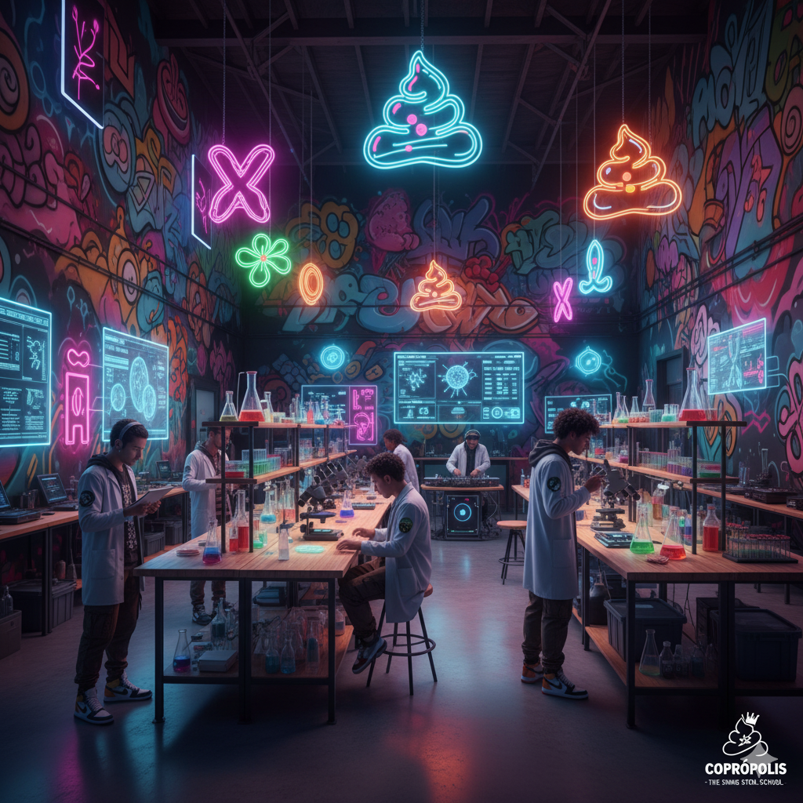

A Coprópolis Academy não nasceu em um campus tradicional, mas sim de uma mesa de coffee shop em Berlim, no início dos anos 2000. Seus fundadores, um trio de jovens cientistas e artistas urbanos — a Microbiologista Dra. Ella Viscera, o Paleocoprologista Dr. Enzo Fecalino e o designer de moda streetwear Max "The Mixer" Silva — estavam cansados do preconceito em torno do "assunto". Eles observaram que, enquanto o cocô era a chave para a saúde, a história, a ecologia e até mesmo a energia sustentável (biogás), ele era universalmente ridicularizado e negligenciado. Eles se perguntaram: Como é que algo tão essencial pode ter um tratamento tão "sem graça"? A resposta foi criar uma instituição que abraçasse a ciência das fezes — a Coprologia — com uma atitude totalmente inovadora. A primeira sede foi um galpão abandonado transformado em um laboratório/estúdio de arte, onde microscópios de alta tecnologia dividiam espaço com grafites vibrantes e aulas de breakdance.
Coprópolis, que significa "cidade das fezes" em grego (no bom sentido!), foi escolhido para afirmar que as fezes são um universo a ser explorado. O lema, "Da Matéria-Prima ao Mestrado: We Dig the Dirt" (Nós cavamos a sujeira), resumia a missão. A Coprópolis Academy rapidamente ganhou notoriedade mundial, não apenas pela seriedade e originalidade de sua pesquisa (desde transplantes de microbiota fecal até o estudo de coprólitos pré-históricos), mas também porque seus alunos e professores usavam jalecos de design arrojado, tênis exclusivos e falavam sobre a Escala de Bristol como se fosse o último lançamento musical. Tornou-se o lugar onde a inteligência e o estilo se fundiam: a escola com mais swag do mundo, focada no que realmente importa... O cocô.
| Valor | Nome do Princípio | Descrição e Atitude |
|---|---|---|
| Abertura Total | No Taboo Flow | Abolimos a vergonha. Fezes são fato, são ciência, são arte. Aqui, falamos abertamente, com confiança e vocabulário preciso. |
| Curiosidade Profunda | Dig the Dirt | Incentivamos a pesquisa minuciosa e a análise forense de cada amostra. Não aceitamos o superficial. Queremos saber a procedência, o histórico e o potencial. |
| Estilo Inovador | The Fecal Futurism | A ciência é *cool*. Combinamos metodologias rigorosas de Coprologia com *design*, tecnologia e arte. Nossos laboratórios parecem galerias, e nossos *papers* são visualmente impressionantes. |
| Impacto Real | Gut Check Global | Nossas pesquisas devem gerar soluções para a saúde global, saneamento, energia e meio ambiente. Não estudamos o cocô por estudar; estudamos para mudar o mundo. |
| Autenticidade Brilhante | Own Your Output | Ser você mesmo é a nossa maior virtude. Os alunos são encorajados a trazer sua perspectiva única para a pesquisa, seja ela vinda do *hip-hop*, da culinária molecular ou da filosofia clássica. |
Pesquisadora, professora e uma das fundadoras da escola
Especialista em microbiomas, coordenador do laboratório de pesquisa.
Um dos principais pesquisadores em coprólitos pré-históricos e professor de paleocoprologia.
Artista, cientista, bonito, solteiro, gente fina e o diretor da escola.